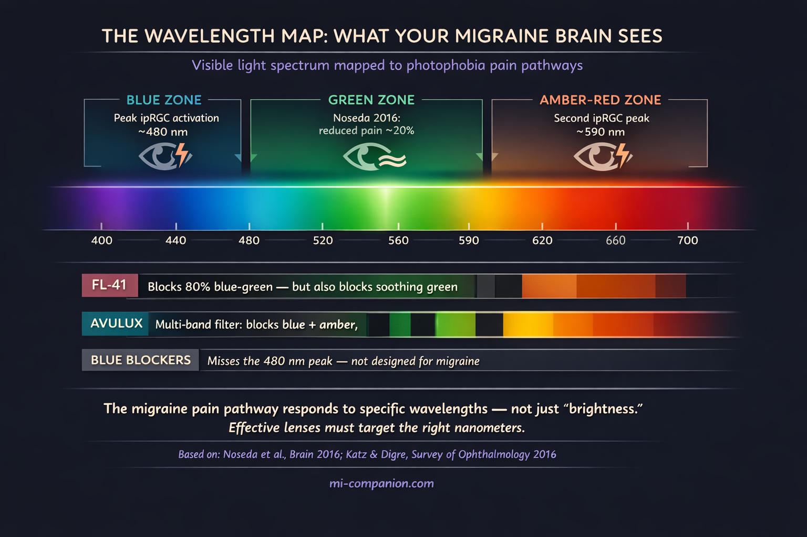

By Rustam Iuldashov
30 years lived experience with chronic migraine | Sources: 25 peer-reviewed references including Brain (n=69), J Clin Neurosci (n=78), Ophthalmology (n=30), Survey of Ophthalmology | Last updated: July 2026
Medical Review: This content is based on peer-reviewed research from Brain, Nature Neuroscience, Survey of Ophthalmology, Journal of Clinical Neuroscience, Ophthalmology, Cephalalgia, Frontiers in Neurology, and the Journal of Neuro-Ophthalmology.
Important Notice: This article is for informational purposes only and does not replace professional medical advice. The author is not a licensed physician or healthcare professional. This article discusses consumer products but does not endorse any specific brand. Always consult your neurologist or ophthalmologist before making treatment decisions.
Key Takeaways
- Photophobia is real physiology, not sensitivity. 80–90% of migraine sufferers experience it, and 30–60% of attacks may be triggered by light — making light management a legitimate therapeutic target[1] [2]
- FL-41 has 35 years of evidence — but no adult RCT. It supports photophobia and fluorescent light sensitivity. The gap: no large randomized controlled trial in adults[6] [7]
- Avulux is the only lens with placebo-controlled data — with caveats. The primary endpoint was not met. Benefits appeared only in post-hoc subgroup analyses. Study authors had financial conflicts[10]
- Sunglasses indoors make photophobia worse. Dark adaptation recalibrates your retina to expect darkness, lowering your pain threshold for normal light. Precision-tinted lenses avoid this trap[11] [12]
- Green light (~520 nm) is uniquely soothing. Newer lenses are designed to transmit it while filtering harmful blue, amber, and red wavelengths[5]
- Night Shift ≠ migraine glasses. Built-in screen modes shift blue light for free — a good step, but not enough to address the multi-wavelength pain pathway[4] [5]
- These glasses are tools, not cures. They work best as part of a comprehensive migraine management plan — lowering the volume, not silencing the orchestra
- Most brands offer 60-day return policies. Test before you commit — this is an investment worth trying, not a leap of faith[14]
The fluorescent aisle at Target is where it hits. Not the migraine itself — that’s still hours away. But the slow tightening behind your eyes, the way the overhead tubes seem to pulse with a frequency only your brain can hear. You squint. You rush. You leave with half the list.
Then one day you see them: rose-tinted glasses on your favorite migraine influencer. The ad says “clinically proven.” The price says $300. And a voice in your head asks the only question that matters: do they actually work, or am I about to buy the world’s most expensive placebo? I've asked that about every trigger you can't avoid.
I’ve spent 30 years asking that question about everything. So I did what I always do — followed the money, read the studies, and checked the fine print.
Your Eyes Have a Secret Pain Channel
Light doesn’t just bother the migraine brain. It assaults it.
Between 80 and 90% of people with migraine experience photophobia — not a mild preference for dim rooms, but genuine pain triggered by illumination.[1] For 30–60% of us, light doesn’t merely worsen an attack. It starts one.[2]
For decades, no one could explain why. Then researchers found a class of retinal cells that changed everything.
They’re called intrinsically photosensitive retinal ganglion cells — ipRGCs — and they have nothing to do with vision.[3] You don’t see through them. They don’t detect faces or read text. Instead, they function as a light meter hardwired to the brain’s pain circuitry. When certain wavelengths hit these cells — particularly blue light near 480 nanometers and amber/red-orange near 590 nanometers — they fire a signal straight to the thalamus, which amplifies it into pain. This is a core component of a hyperexcitable brain.[4]
Picture a fire alarm wired not to a speaker but to your trigeminal nerve. In a migraine brain, that alarm is miscalibrated. Fluorescent office lighting becomes a five-alarm blaze.
Here’s the twist that reshaped an industry. In 2016, Harvard researcher Rodrigo Noseda tested how different wavelengths of light affected 69 migraine patients during attacks.[5] Blue light made the pain worse. Amber made it worse. Red made it worse. But a narrow band of green light — around 520 nanometers — did something no one expected. It reduced pain intensity by roughly 20%.[5]
One color helped. Every other color hurt. That finding drew a roadmap for every tinted lens company that followed.

FL-41: The Rose Tint That Started It All
The origin story isn’t glamorous. No one set out to cure migraine.
In 1991, a team in Birmingham, England, was trying to help people who got headaches from flickering fluorescent tubes. They formulated a rose-colored tint — FL-41, “FL” literally for “fluorescent” — and tested it on 20 children with migraine.[6]
The results were striking. Kids wearing FL-41 saw their attacks drop from 6.2 per month to 1.6 — a 74% reduction.[6] Children in the blue-tint control group showed far less improvement. Four of them quit early. Only one child in the FL-41 group stopped wearing their lenses consistently.
What made FL-41 work? It filtered wavelengths in the 480–520 nanometer range — the exact zone where ipRGCs are most reactive. Later studies added layers: FL-41 outperformed both rose and gray tints in reducing involuntary blink rate and eyelid contraction force in patients with blepharospasm, a neurological condition closely linked to photophobia.[7] An fMRI study demonstrated that precision tints could quiet the cortical hyperactivation — the brain’s overreaction to visual stimuli — characteristic of migraine.[8]
Thirty-five years of evidence. A clear mechanism. Real patients helped.
But the studies that built FL-41’s reputation share a weakness that matters: they are small. The landmark trial enrolled 20 children.[6] The blepharospasm work involved 26 to 52 participants.[7][25] No large randomized controlled trial in adults has ever been published for FL-41 alone. And several key studies were conducted by researchers at the University of Utah who later developed competing commercial products — a conflict of interest the Association of Migraine Disorders has explicitly flagged.[9][10]
Small studies with possible bias don’t mean the science is wrong. They mean the science is incomplete. FL-41 has plausible mechanisms and consistent directional findings. What it lacks is the definitive large-scale RCT that would settle the debate.
The Trap in Your Nightstand Drawer
Here’s the single most important thing I can tell you about light and migraine — and most people get it backwards.
Wearing sunglasses indoors is making you worse.
I know. When light feels like broken glass pressing against your eyeballs, grabbing the darkest lenses in the house seems like survival. But in a 2016 review published in Survey of Ophthalmology, Drs. Katz and Digre concluded that indoor sunglasses should be “strongly discouraged.”[11]
The mechanism is called dark adaptation. Block all incoming light, and your photoreceptors recalibrate to the darkness. They become more sensitive. When the sunglasses come off — when you glance over the top of the frame or step into a lit hallway — normal light hits a retina tuned for a cave. The pain spikes. You reach for the sunglasses again. And the cycle tightens.[11]
Think about the last time you walked out of a matinee into afternoon sun. That blinding moment? That’s temporary dark adaptation from two hours in a theater. Now imagine doing that to your eyes every day, all day, for years.
⚠️ When to Seek Emergency Help
Photophobia alone is a migraine symptom, not an emergency. But sudden, severe light sensitivity paired with a new thunderclap headache, stiff neck, fever, or vision loss can signal a medical emergency — including meningitis, subarachnoid hemorrhage, or acute angle-closure glaucoma.
If you are experiencing any of these symptoms alongside sudden photophobia, call your local emergency number immediately. Do not wait. Do not use this article to self-diagnose.
This is why precision-tinted lenses aim to filter specific harmful wavelengths while letting enough total light through to keep the retina properly adapted. It’s the difference between closing the curtains and installing a UV film on the window. One isolates you. The other protects you while keeping you in the world.
The Lens Wars: What Each Approach Actually Does
The tinted lens market has exploded into a confusing landscape. Strip away the marketing, and three distinct approaches emerge.
Classic FL-41 (TheraSpecs, SomniLight, Zenni FL-41)
These lenses use the original 1991 technology, blocking roughly 80% of light between 480 and 520 nanometers.[13] The world turns a distinctive rose-pink. TheraSpecs, developed by a migraine community member who understood the illness from the inside, is the most established brand in this space — starting around $100 to $149.[14]
What FL-41 does well: reduces fluorescent light sensitivity, eases interictal photophobia (the light sensitivity that lingers between attacks), and provides meaningful relief in difficult lighting environments. What it doesn’t address: FL-41 blocks roughly 80% of the green light Noseda identified as soothing.[15] It also ignores the amber and red wavelengths that ipRGC research has since implicated in photophobia.[4][5] And because FL-41 is a dye-based tint applied by hand, lens-to-lens consistency varies between optical shops.[10][16]
FL-41 is a 1991 answer. The questions have gotten more specific since then.
Avulux / Axon Optics (merged in 2023)
Avulux represents the next generation: a multi-band precision filter engineered to block up to 97% of blue (480 nm) and amber/red (590 nm) wavelengths while transmitting over 70% of green light.[16] It allows about 65% of total light through — lighter than FL-41, with less color distortion and less dark-adaptation risk.
The critical evidence: Avulux is the only tinted lens ever tested in a randomized, double-blind, placebo-controlled trial for adult migraine.[10] But the headline results were complicated. In 78 subjects with episodic migraine, the primary endpoint — pain reduction at two hours — was not significantly different between Avulux and placebo lenses.[10]
Significance emerged only in post-hoc analyses — subgroup analyses performed after the trial — which showed clinically meaningful pain reduction when the lens was applied within the first hour, when all headaches were included, and when no medications were taken.[10][17]
Post-hoc findings are exploratory, not definitive. They generate hypotheses; they don’t confirm them. Also relevant: the study’s lead author was CEO of Avulux, and a co-author held equity in the company.[10]
At $300 to $535, these are the most expensive option. They are also the only option with any placebo-controlled data at all. One practical note: both Avulux/Axon Optics and TheraSpecs offer 60-day return windows, so you can test whether the lenses help your photophobia before committing financially.[14]
Generic blue light blockers
The American Academy of Ophthalmology does not recommend blue light blocking glasses for computer use.[18] The Mayo Clinic has noted insufficient evidence for their effectiveness.[19] Most blue blockers filter wavelengths between 400 and 460 nanometers — below the 480 nm zone that matters most for migraine photophobia.[15] They are not migraine glasses, regardless of how they’re packaged.
Night Shift ≠ migraine glasses. The “Night Shift” and “Eye Comfort” modes built into most phones and laptops already shift screen color temperature away from blue — for free. It’s a reasonable step, but for the migraine brain caught in a doomscroll spiral, it's not enough. The problem isn’t one color. It’s a specific combination of wavelengths hitting a pain pathway that software color filters weren’t designed to address.[4][5]
What People Actually Experience
Patient forums and migraine blogs tell a more honest story than any ad campaign.
The pattern isn’t “these cured my migraine.” It’s subtler: the fluorescent lights at the grocery store became tolerable. Screen time stopped building toward an attack by mid-afternoon. The visual noise that chips away at your threshold all day — the cumulative burden of light — got turned down a few notches.[20]
One blogger with vestibular migraine described how FL-41 helped but couldn’t overcome a trigger load that was simply too high. A chronic migraine patient said TheraSpecs let her shop without feeling like the store lighting was “melting her brain.” A patient advocate who tested multiple brands over seven years found Avulux most effective in big-box stores and for late-evening screen use, but noted the steep price.[20] Another user described the lenses as feeling like a portable dark room — without the dark-adaptation penalty.
The consistent thread: these glasses lower the volume. They don’t silence the orchestra. For someone already managing triggers — sleep, stress, diet, medication — that volume reduction can tip the balance. For someone with uncontrolled chronic migraine, glasses alone won’t be enough.
No one in the community calls them a cure. The ones who love them call them a tool.
The Honest Verdict
The photobiology is real. ipRGCs exist. The wavelength-specific pain pathway is well-documented. The principle of selective filtering — blocking harmful wavelengths while preserving beneficial ones — is scientifically sound.[3][4][5]
FL-41 has 35 years of clinical history supporting its use for photophobia and light sensitivity between attacks.[6][7][8] Newer filters like Avulux take the science further by targeting additional wavelengths and preserving green light transmission.[10][16]
But the evidence base remains frustratingly thin. No large-scale adult RCT with more than 200 participants has definitively proven that any tinted lens reduces migraine frequency. The one placebo-controlled trial for Avulux failed its primary endpoint.[10] FL-41 has never been tested in a proper adult RCT. Financial conflicts of interest run through much of the published research.[9][10]
What you can reasonably expect: less photophobia between attacks, better tolerance of artificial lighting, reduced cumulative light stress — especially alongside other trigger management strategies.[1][7][11]
What you should not expect: a cure. A replacement for medical treatment. A guaranteed drop in attack frequency.
These glasses don’t stop migraine. They change the terms of engagement with light — the trigger you can’t avoid, in a world that won’t dim its lights for you. And with 60-day return policies from most major brands, you can test that claim on your own eyes before committing.[14]
⚕️ Important Medical Disclaimer
This article is for informational and educational purposes only and does not constitute medical advice, diagnosis, or treatment. The author, Rustam Iuldashov, is not a licensed physician, neurologist, or healthcare professional. He is a patient advocate with 30 years of personal experience living with chronic migraine.
All clinical claims in this article are sourced from peer-reviewed research published in indexed medical journals. Study designs and sample sizes are noted where applicable.
This article discusses consumer products (tinted lenses) but does not endorse any specific brand. Product claims cited reflect manufacturer statements and published clinical data — not personal endorsement. Always evaluate the evidence and consult your neurologist or ophthalmologist before making treatment decisions.
Precision-tinted lenses should complement — never replace — professional medical care for migraine and photophobia. This content was last reviewed for accuracy in July 2026.
References
- Digre KB, Brennan KC. “Shedding light on photophobia.” J Neuro-Ophthalmol, 32(1):68–81 (2012). doi:10.1097/WNO.0b013e3182474548. Study design: Comprehensive review.
- Albilali A, Dilli E. “Photophobia: When Light Hurts, a Review.” Curr Neurol Neurosci Rep, 18(9):62 (2018). doi:10.1007/s11910-018-0864-0. Study design: Narrative review.
- Noseda R, Burstein R. “Migraine pathophysiology: anatomy of the trigeminovascular pathway.” Pain, 154(Suppl 1):S44–S53 (2013). doi:10.1016/j.pain.2013.07.021. Study design: Review.
- Noseda R, Kainz V, Jakubowski M, et al. “A neural mechanism for exacerbation of headache by light.” Nat Neurosci, 13(2):239–245 (2010). doi:10.1038/nn.2475. Study design: Animal + clinical study.
- Noseda R, Bernstein CA, Nir RR, et al. “Migraine photophobia originating in cone-driven retinal pathways.” Brain, 139(Pt 7):1971–1986 (2016). doi:10.1093/brain/aww119. Study design: Clinical + animal electrophysiology. n=69 (41 completers).
- Good PA, Taylor RH, Mortimer MJ. “The use of tinted glasses in childhood migraine.” Headache, 31(8):533–536 (1991). doi:10.1111/j.1526-4610.1991.hed3108533.x. Study design: RCT. n=20.
- Blackburn MK, Lamb RD, Digre KB, et al. “FL-41 tint improves blink frequency, light sensitivity, and functional limitations in patients with benign essential blepharospasm.” Ophthalmology, 116(5):997–1001 (2009). doi:10.1016/j.ophtha.2008.12.031. Study design: Crossover trial. n=30.
- Huang J, Zong X, Wilkins A, et al. “fMRI evidence that precision ophthalmic tints reduce cortical hyperactivation in migraine.” Cephalalgia, 31(8):925–936 (2011). doi:10.1177/0333102411409076. Study design: Controlled clinical study. n=11.
- Association of Migraine Disorders. “What To Know About Migraine Glasses.” migrainedisorders.org (2024). Study design: Expert review/consumer guide.
- Posternack C, Kupchak P, Capriolo AI, Katz BJ. “Targeting the intrinsically photosensitive retinal ganglion cell to reduce headache pain and light sensitivity in migraine: A randomized double-blind trial.” J Clin Neurosci, 113:22–31 (2023). doi:10.1016/j.jocn.2023.04.015. Study design: RCT (double-blind, placebo-controlled). n=78.
- Katz BJ, Digre KB. “Diagnosis, pathophysiology, and treatment of photophobia.” Surv Ophthalmol, 61(4):466–477 (2016). doi:10.1016/j.survophthal.2015.11.003. Study design: Systematic review.
- American Academy of Ophthalmology. “Photophobia: Looking for Causes and Solutions.” EyeNet Magazine. Interview with K. Digre, MD. Study design: Expert opinion.
- TheraSpecs. “Tinted Glasses for Migraines: Research Shows FL-41 Tint is Better.” theraspecs.com (2024). Study design: Brand summary.
- MyMigraineTeam. “Axon Optics vs. TheraSpecs Glasses for Migraine: 5 Differences.” mymigraineteam.com (2024). Study design: Consumer comparison.
- Virtual Headache Specialist. “Migraine Glasses: A Look Beyond Blue Light and FL-41.” virtualheadachespecialist.com (2025). Study design: Clinical comparison review.
- Moran Eye Center, University of Utah Health. “Eyeglasses for Migraine and Other Conditions.” healthcare.utah.edu (2025). Study design: Institutional guide.
- Avulux. “Clinical & Scientific Resources.” avulux.com (2024). Study design: Company summary of NCT04341298. n=79.
- American Academy of Ophthalmology. “Are Computer Glasses Worth It?” aao.org (2024). Study design: Expert consensus.
- Mayo Clinic Health System. “Are Blue Light Blocking Glasses a Must-Have?” mayoclinichealthsystem.org (2024). Study design: Clinical FAQ.
- The Dizzy Cook. “Which Migraine Glasses Are Best?” thedizzycook.com (2024). Study design: Patient experience/product comparison.
- Hoggan RN, Subhash A, Blair S, et al. “Thin-film optical notch filter spectacle coatings for the treatment of migraine and photophobia.” J Clin Neurosci, 28:71–76 (2016). doi:10.1016/j.jocn.2015.09.024. Study design: Crossover trial. n=37.
- Martin LF, Patwardhan AM, Jain SV, et al. “Evaluation of green light exposure on headache frequency and quality of life in migraine patients.” Cephalalgia, 41(2):135–147 (2021). doi:10.1177/0333102420956711. Study design: One-way crossover trial. n=29.
- Noseda R, Lee AJ, Nir RR, et al. “Neural mechanism for hypothalamic-mediated autonomic responses to light during migraine.” Proc Natl Acad Sci USA, 114(28):E5683–E5692 (2017). doi:10.1073/pnas.1708361114. Study design: Clinical + animal study.
- Noseda R, Bernstein CA, Nir RR, et al. “Narrow band green light effects on headache, photophobia, sleep, and anxiety among migraine patients.” Front Neurol, 14:1282236 (2023). doi:10.3389/fneur.2023.1282236. Study design: Open-label.
- Lamb RD, Digre KB, Smith AG, et al. “Electromyographic evidence that FL-41 tinted spectacles decrease blink frequency and force in BEB.” Neuro-Ophthalmology (2006). Study design: Controlled crossover. n=52.